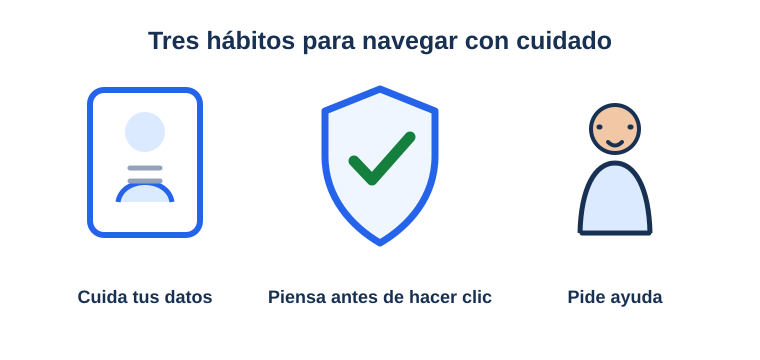

¿Qué es internet y cómo usarlo con seguridad?
Una red para aprender y compartir
Internet conecta computadoras, tabletas y teléfonos. Podemos usarlo para aprender, jugar y hablar con otras personas. Igual que en la calle, hay que tomar precauciones: navega en páginas apropiadas para tu edad y sigue las reglas de tu familia.
Regla principal: Usa internet con el permiso y la orientación de una persona adulta de confianza.
Piensa antes de hacer clic

Mis datos son míos
Aprende a proteger tus datos
La lectura de esta lección explica cómo cuidar tus datos y pedir ayuda. Ver el video en YouTube.
Mantén privada tu información
Tu nombre completo, dirección, escuela, teléfono, contraseñas y fotos personales son datos privados. No los publiques ni los envíes a personas que no conoces. Consulta siempre a un adulto de confianza antes de compartir información.
Contraseñas secretas y mensajes respetuosos
- Usa contraseñas difíciles de adivinar y no las compartas con otras personas.
- Trata a los demás con respeto, igual que en persona.
- No abras enlaces, archivos o mensajes inesperados sin preguntar primero a una persona adulta.
Si algo te incomoda, cuéntalo
Si alguien te pide información o fotos, te escribe de forma incómoda, o aparece algo que te asusta, no respondas. Cierra la página y cuéntaselo enseguida a tu familia o a otra persona adulta de confianza. No es tu culpa y pueden ayudarte.
Tres hábitos para navegar con cuidado
Le cuento a una persona adulta
Recuerda cuándo pedir ayuda
Puedes leer las reglas de seguridad y responder la práctica. Ver el video en YouTube.
Repasemos las reglas de seguridad
Responde las 5 preguntas. Si aciertas 4 o más, apruebas la lección. Si algo te cuesta, puedes volver a repasar y probar de nuevo.
Recuerda: un adulto de confianza puede ayudarte
Práctica: navegante seguro
Elige la respuesta más segura para cada situación.
¡Completaste el curso!
Terminaste las lecciones y aprobaste la práctica. Recuerda navegar con cuidado y pedir ayuda a una persona adulta cuando lo necesites.
Salir del curso